Grafana ships with a local admin account, and that is the right way to bootstrap it. It is the wrong way to run it for a team. A shared local password cannot tell you who viewed a dashboard, cannot be revoked per person, and does not follow anyone out of the company.
This lab removes that account from the login path. Keycloak already knows who the users are, so Grafana asks Keycloak instead: an OIDC redirect, a signed token, a group claim, and a role. alice lands as a Grafana server admin because she is in platform-admins. bob lands as a Viewer because he is in developers. Neither has a Grafana password.
The whole flow is one direction: Keycloak authenticates, Grafana authorizes.
What gets built
| Component | Version | Role |
|---|---|---|
| Kubernetes | v1.36.5+k3s1 |
1 server + 3 agents |
| Grafana | 10.5.15 / 12.3.1 |
OIDC client and sessions |
| Keycloak | 26.8.2 |
realm lab, client grafana |
| PostgreSQL | 16 |
Keycloak's database |
| Storage | Longhorn 1.13.0 |
5Gi longhorn volume |
| Ingress | Traefik | lab default TLS cert |
| TLS | kube-system/lab-tls |
same CA Keycloak uses |
The Keycloak realm and the two test users already exist from the earlier Vault and Argo CD labs. This article reuses them instead of creating a second identity provider.
Why Grafana needs the lab CA
Grafana is a Go service. Before it redirects a browser, it fetches the realm's /.well-known/openid-configuration document from Keycloak and validates that certificate like any other HTTPS client. The lab CA is not in the container's trust store, so the check fails with x509: certificate signed by unknown authority.
There are two ways out. tls_skip_verify_insecure = true makes the error disappear and disables the only check that proves Grafana is talking to your Keycloak. The other way is to teach Grafana the CA:
env:
SSL_CERT_FILE: /etc/grafana/certs/ca.crt
extraConfigmapMounts:
- name: lab-ca
mountPath: /etc/grafana/certs
configMap: lab-ca
readOnly: true
Go reads SSL_CERT_FILE into its system root pool, so every outbound TLS call, including the token exchange, trusts the same CA the browser already trusts.
Step 1: register Grafana as a Keycloak client
The client is confidential, uses the standard authorization-code flow, and needs exactly one redirect URI:
$token = (Invoke-RestMethod -Method Post `
-Uri 'https://keycloak.10.10.10.11.nip.io/realms/master/protocol/openid-connect/token' `
-Body @{ grant_type='password'; client_id='admin-cli'; username='admin'; password=$KC_ADMIN } `
-SkipCertificateCheck).access_token
$client = @{
clientId = 'grafana'
publicClient = $false
standardFlowEnabled = $true
redirectUris = @('https://grafana.10.10.10.11.nip.io/login/generic_oauth')
protocolMappers = @(@{
name = 'groups'
protocol = 'openid-connect'
protocolMapper = 'oidc-group-membership-mapper'
config = @{
'claim.name' = 'groups'
'full.path' = 'false'
'id.token.claim' = 'true'
'access.token.claim' = 'true'
'userinfo.token.claim' = 'true'
}
})
} | ConvertTo-Json -Depth 8
Invoke-RestMethod -Method Post `
-Uri 'https://keycloak.10.10.10.11.nip.io/admin/realms/lab/clients' `
-Headers @{ Authorization = "Bearer $token" } -Body $client -SkipCertificateCheck
Then read the generated secret once and store it outside the repository:
$id = (Invoke-RestMethod -Uri 'https://keycloak.10.10.10.11.nip.io/admin/realms/lab/clients?clientId=grafana' `
-Headers @{ Authorization = "Bearer $token" } -SkipCertificateCheck)[0].id
(Invoke-RestMethod -Uri "https://keycloak.10.10.10.11.nip.io/admin/realms/lab/clients/$id/client-secret" `
-Headers @{ Authorization = "Bearer $token" } -SkipCertificateCheck).value |
Set-Content -NoNewline client-secret.txt
full.path = false matters. With it, the claim contains platform-admins; without it, /platform-admins. Every role expression in Grafana is a string comparison, so the leading slash silently breaks the mapping.
Step 2: deploy Grafana
Three Kubernetes objects come before the chart: the CA, the OAuth secret, and the bootstrap admin password.
kubectl --kubeconfig C:\Users\C\.kube\k3s-lab.yaml create namespace grafana
kubectl --kubeconfig C:\Users\C\.kube\k3s-lab.yaml -n grafana create configmap lab-ca `
--from-file=ca.crt=C:\path\to\ca.crt
$oauth = Get-Content -Raw client-secret.txt
kubectl --kubeconfig C:\Users\C\.kube\k3s-lab.yaml -n grafana create secret generic grafana-oauth `
--from-literal=client-secret=$oauth
$adminPass = -join ((48..57) + (65..90) + (97..122) | Get-Random -Count 24 | ForEach-Object { [char]$_ })
kubectl --kubeconfig C:\Users\C\.kube\k3s-lab.yaml -n grafana create secret generic grafana-admin `
--from-literal=admin-user=admin --from-literal=admin-password=$adminPass
The chart values carry the actual integration:
admin:
existingSecret: grafana-admin
userKey: admin-user
passwordKey: admin-password
persistence:
enabled: true
storageClassName: longhorn
size: 5Gi
deploymentStrategy:
type: RollingUpdate
rollingUpdate:
maxSurge: 0
maxUnavailable: 1
ingress:
enabled: true
ingressClassName: traefik
hosts:
- grafana.10.10.10.11.nip.io
tls: []
env:
GF_SERVER_ROOT_URL: https://grafana.10.10.10.11.nip.io
GF_SERVER_DOMAIN: grafana.10.10.10.11.nip.io
GF_SECURITY_COOKIE_SECURE: "true"
GF_SECURITY_COOKIE_SAMESITE: lax
GF_AUTH_GENERIC_OAUTH_ENABLED: "true"
GF_AUTH_GENERIC_OAUTH_NAME: Keycloak
GF_AUTH_GENERIC_OAUTH_CLIENT_ID: grafana
GF_AUTH_GENERIC_OAUTH_SCOPES: "openid profile email"
GF_AUTH_GENERIC_OAUTH_AUTH_URL: https://keycloak.10.10.10.11.nip.io/realms/lab/protocol/openid-connect/auth
GF_AUTH_GENERIC_OAUTH_TOKEN_URL: https://keycloak.10.10.10.11.nip.io/realms/lab/protocol/openid-connect/token
GF_AUTH_GENERIC_OAUTH_API_URL: https://keycloak.10.10.10.11.nip.io/realms/lab/protocol/openid-connect/userinfo
GF_AUTH_GENERIC_OAUTH_LOGIN_ATTRIBUTE_PATH: preferred_username
GF_AUTH_GENERIC_OAUTH_NAME_ATTRIBUTE_PATH: name
GF_AUTH_GENERIC_OAUTH_EMAIL_ATTRIBUTE_PATH: email
GF_AUTH_GENERIC_OAUTH_ROLE_ATTRIBUTE_PATH: "contains(groups[*], 'platform-admins') && 'GrafanaAdmin' || contains(groups[*], 'developers') && 'Viewer'"
GF_AUTH_GENERIC_OAUTH_ALLOW_ASSIGN_GRAFANA_ADMIN: "true"
GF_AUTH_GENERIC_OAUTH_USE_PKCE: "true"
GF_AUTH_GENERIC_OAUTH_TLS_SKIP_VERIFY_INSECURE: "false"
GF_LOG_LEVEL: info
SSL_CERT_FILE: /etc/grafana/certs/ca.crt
envValueFrom:
GF_AUTH_GENERIC_OAUTH_CLIENT_SECRET:
secretKeyRef:
name: grafana-oauth
key: client-secret
maxSurge: 0 is not cosmetic. Grafana's data volume is a ReadWriteOnce Longhorn claim. With the default surge, the new pod is scheduled on another node while the old pod still holds the volume, and the rollout blocks on FailedAttachVolume: Volume is already used by pod(s). Removing the surge makes the chart replace the pod instead of running two.
Install and check the route:
$helm = "C:\Users\C\AppData\Local\Microsoft\WinGet\Packages\Helm.Helm_Microsoft.Winget.Source_8wekyb3d8bbwe\windows-amd64\helm.exe"
& $helm --kubeconfig C:\Users\C\.kube\k3s-lab.yaml upgrade --install grafana grafana/grafana `
--version 10.5.15 -n grafana -f grafana-values.yaml --wait --timeout 5m
After login, Grafana shows the provider and the exact values it is running with:
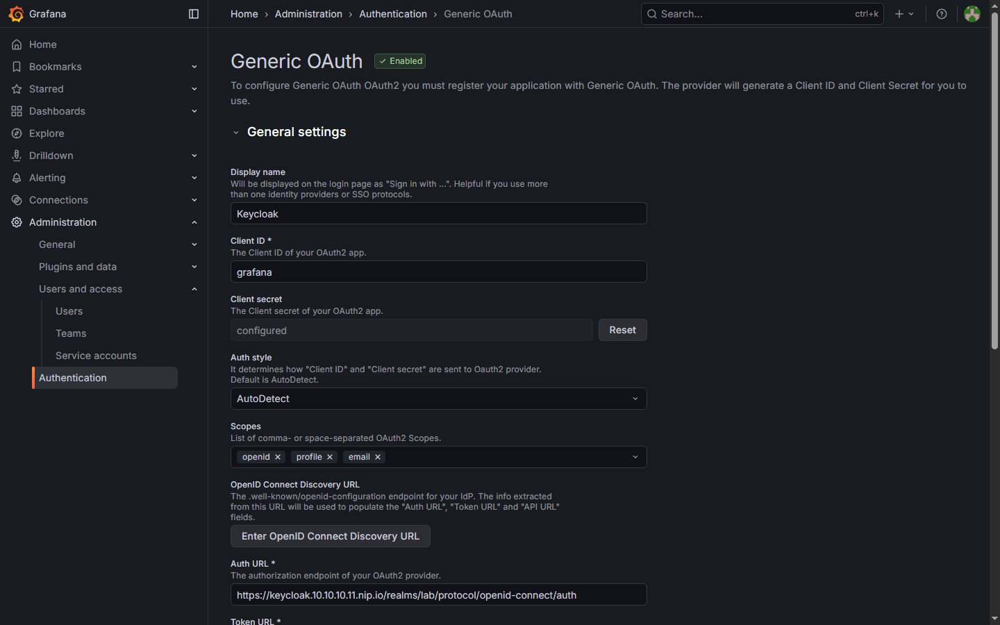
The login page is the user-facing result:
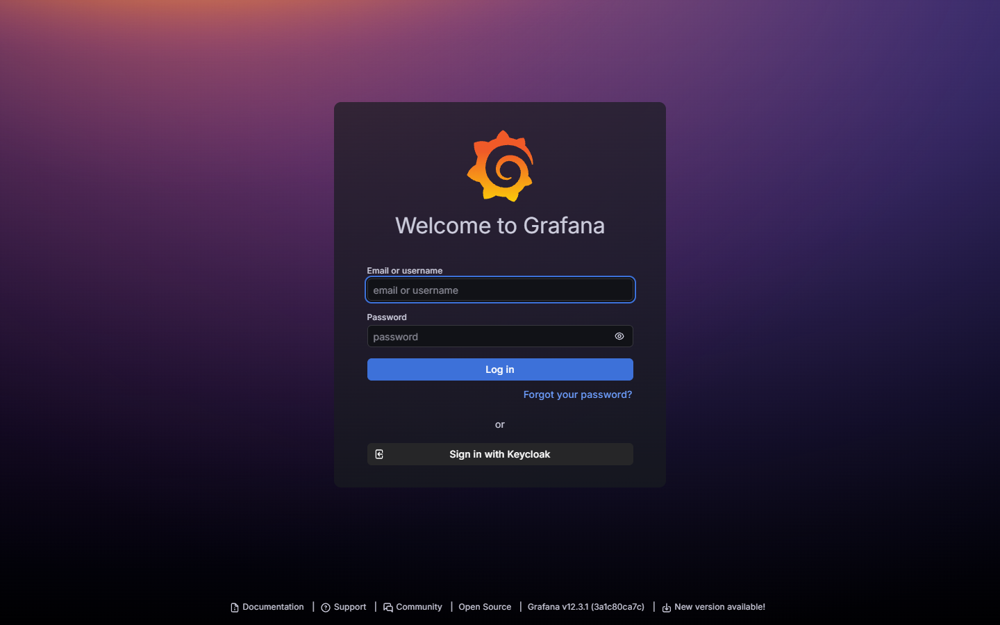
Step 3: map groups to Grafana roles
The role expression is one line of JMESPath:
contains(groups[*], 'platform-admins') && 'GrafanaAdmin' || contains(groups[*], 'developers') && 'Viewer'
Read it as two rules, not one:
platform-adminsbecomesGrafanaAdmin, which sets both the organization role and the server admin flag. That second half only happens becauseallow_assign_grafana_adminis true.developersbecomesViewer, which can read dashboards but cannot create folders, edit dashboards, or open Administration.
Anything unmatched falls back to auto_assign_org_role, which is set to Viewer. That is intentional: a user who authenticates successfully but is in no recognized group gets the least access, not an error page that hides the mistake.
Step 4: sign in as the admin
alice clicks the Keycloak button, gets the lab realm form, and returns to Grafana with a session.
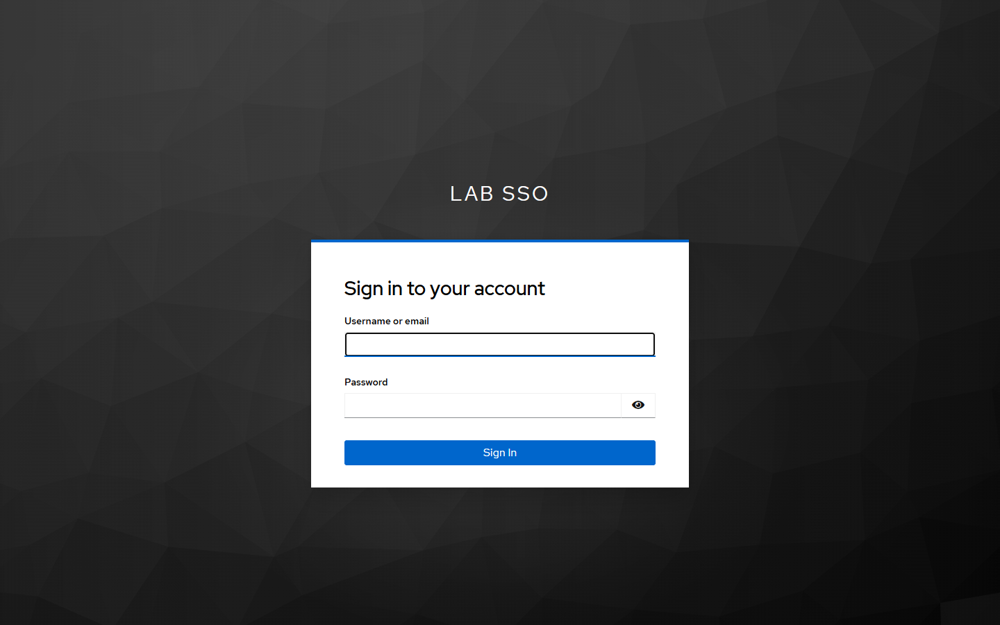
Her sidebar includes Administration, because the group claim resolved to GrafanaAdmin:
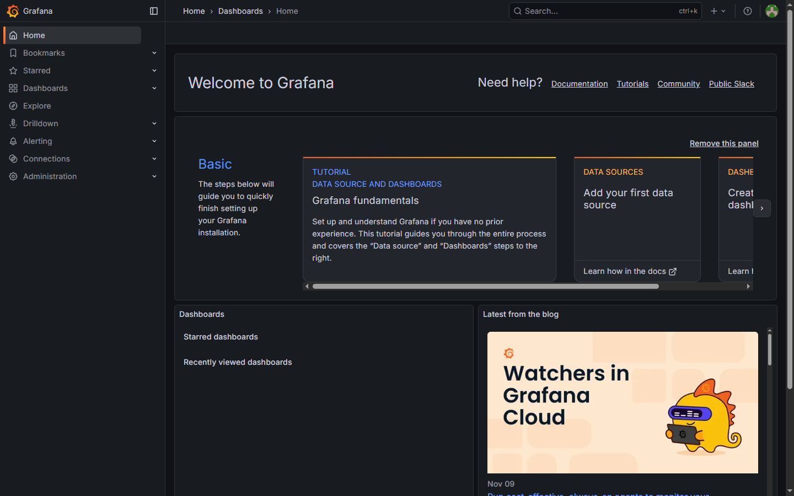
The user list shows both accounts with origin Generic OAuth, which is the evidence that no local Grafana password was used:
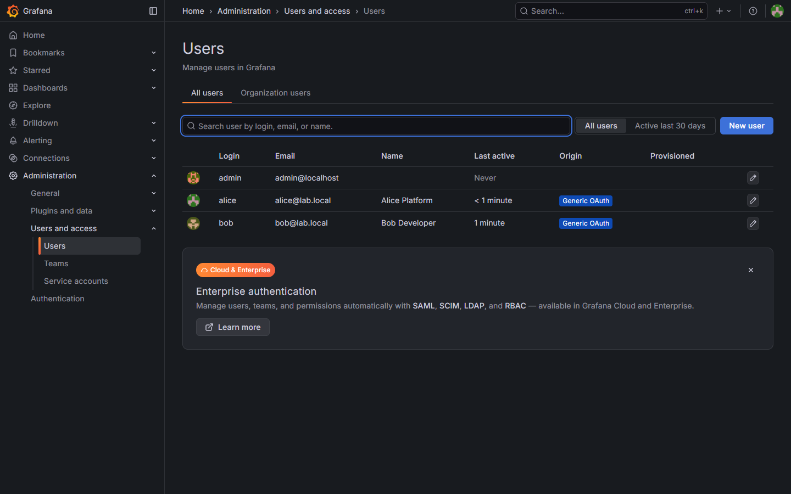
Alice's detail page is the authorization proof: Grafana Admin Yes, Main Org role Admin, and every field marked Synced via Generic OAuth:
Step 5: sign in as the developer
bob goes through the same Keycloak form and lands in the same organization with a different role. His sidebar has no Administration, no Explore, and no Connections:
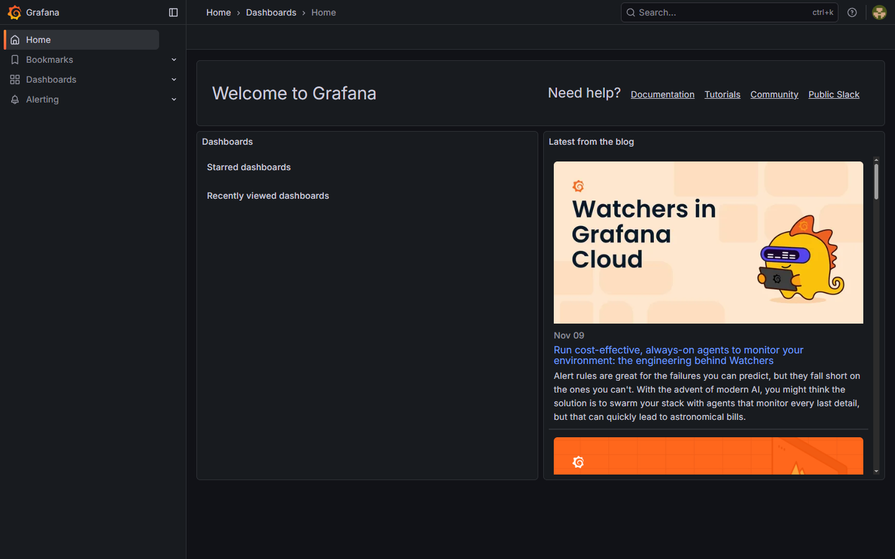
His detail page confirms why: Grafana Admin No, Main Org role Viewer.
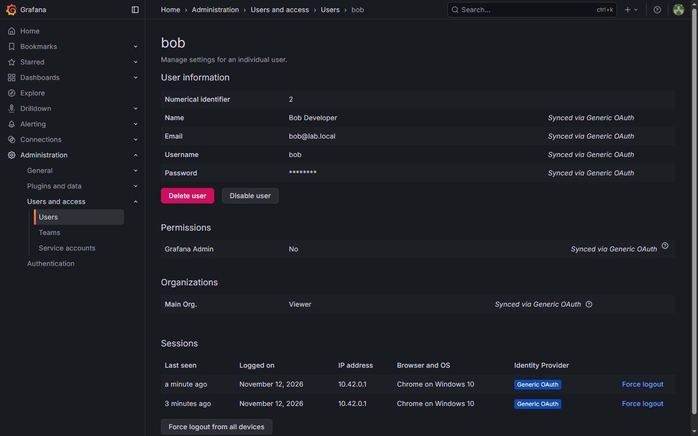
The UI is only half of the check. Asking the API as Bob returns a denial, because Grafana hides admin routes from non-admins instead of advertising a 403:
{"message":"Not found"}
That is the same behavior a missing resource produces, so do not read a 404 as "the endpoint is gone". Read it as "you are not an admin".
How many roles does Grafana have?
Grafana OSS has five basic roles, split across two very different scopes:
| Role | Scope | Can do |
|---|---|---|
| Grafana Admin | Server | Manage users, organizations, and server settings |
| Admin | Organization | Everything in the organization, including users and teams |
| Editor | Organization | Create and edit dashboards, folders, alerts |
| Viewer | Organization | View dashboards and query data sources |
| None | Organization | Nothing until something else grants it |
The server flag and the organization role are separate. Alice has both because the OIDC claim set GrafanaAdmin, which implies organization Admin. A user can be an organization Admin without being Grafana Admin, and that is the safer default.
Custom roles exist, but not here. Fixed roles and custom RBAC roles are Grafana Enterprise and Grafana Cloud features. The OSS build includes the role picker and the RBAC API surface, yet assigning a hand-built role is not supported. What OSS does give you is folder and dashboard permissions, which is enough for the common request below.
Can a user see only one dashboard?
Yes, but a role cannot express that. Every basic role is organization-wide by definition. The boundary has to be a folder or a dashboard permission.
The pattern is small:
- Put the single dashboard in its own folder.
- For every folder the user must not see, remove the
ViewerandEditorrole entries and leave onlyAdmin. - Keep the user at
Viewer, or drop them toNoneand grantViewon the one folder for a stricter boundary.
In the lab, Ops Overview lives in Team Ops with default permissions, and Finance KPIs lives in Finance, whose permission list contains only the Admin role:
$perm = @{ items = @(@{ role = 'Admin'; permission = 4 }) } | ConvertTo-Json -Depth 4
curl.exe -sk -u "admin:$GRAFANA_ADMIN_PASSWORD" -X POST `
"https://grafana.10.10.10.11.nip.io/api/folders/finance/permissions" `
-H "Content-Type: application/json" -d $perm
Permission values are 1 for View, 2 for Edit, and 4 for Admin. Sending a list without a role entry removes that role's access; folder permissions are inherited by every dashboard inside.
The UI makes the result visible: the folder has exactly one grant, and the dialog warns that it applies to the folder and its descendants.
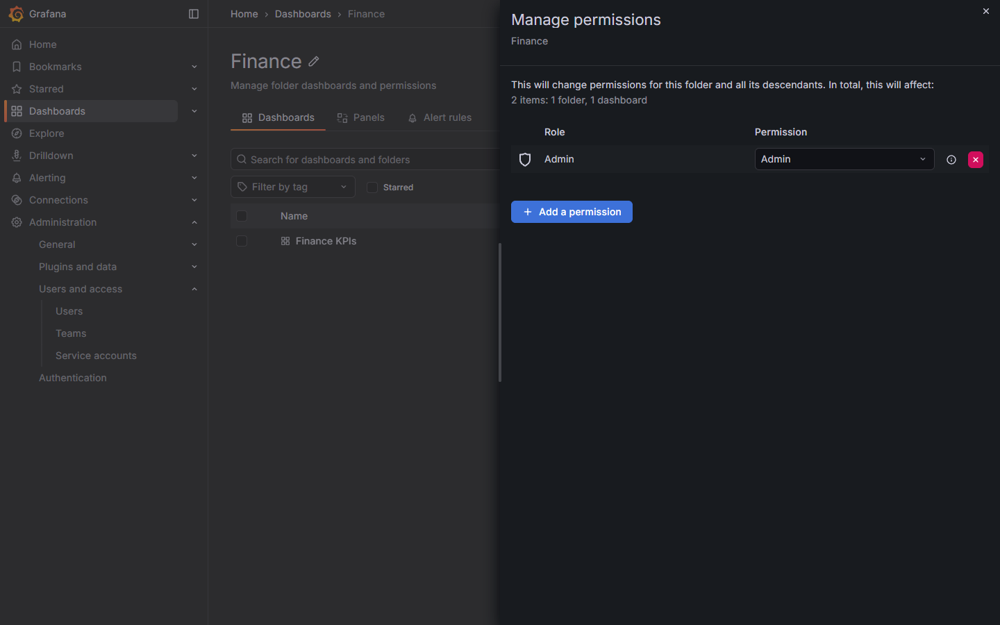
Bob still has the Viewer organization role, but the only folder he can see is Team Ops, and it contains one dashboard:
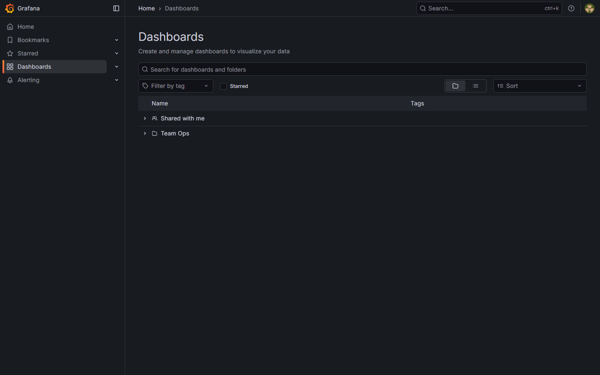
He can open it:
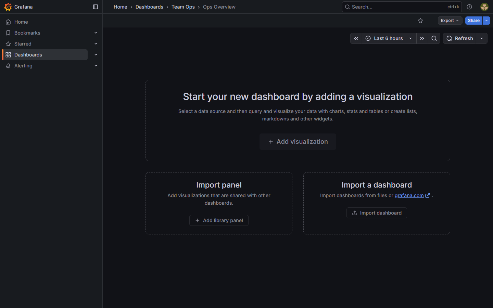
And the other dashboard fails at the API with a 403, not a rendered empty page:
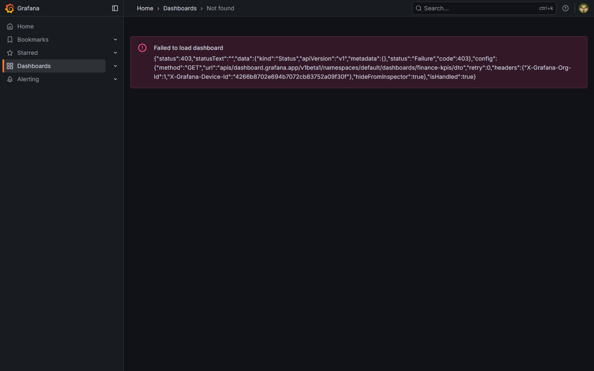
For the strictest OSS version, set the user's organization role to None and grant View to that user or team on the one folder. The user then has no organization-wide read at all, only the folder grant. That is the closest OSS gets to a custom role.
Two limits are worth knowing. A public dashboard or a snapshot link has its own access path and ignores folder permissions, so disable public sharing if the boundary matters. And Viewer can still query the data sources behind an allowed dashboard; hiding the dashboard is not the same as hiding the data.
Two failures that cost time
Keycloak rejected groups as a scope. The first login ended with "Login provider denied login request", and the Grafana log had the real cause:
level=error msg="failed to login " error=invalid_scope
errorDesc="Invalid scopes: openid profile email groups"
Keycloak validates requested scopes against the client's available scopes. A group membership mapper on the client injects the claim whether or not groups is requested, so listing it as a scope was both unnecessary and invalid. Removing it from GF_AUTH_GENERIC_OAUTH_SCOPES fixed the login without touching the mapper.
The rollout deadlocked on the data volume. After a values change, the new pod waited on the Longhorn volume while the old pod kept it attached:
FailedAttachVolume: Waiting for detach for volume "pvc-..."
Volume is already used by pod(s) grafana-...
Choosing Recreate in the chart exposed a second problem: server-side apply kept the previous rollingUpdate fields and Kubernetes rejected the object with may not be specified when strategy type is 'Recreate'. The working setting is RollingUpdate with maxSurge: 0 and maxUnavailable: 1, which removes the surge without fighting the chart's schema.
What this lab proves and what it does not
Proved: OIDC discovery over a private CA, authorization-code login with PKCE, a group claim that produces two different Grafana roles, server-admin assignment from a group, and session creation without a local Grafana password.
Not proved: high availability. One Grafana replica on one Longhorn volume means a restart or node loss takes the UI down. Keycloak is a hard dependency of every login, which is the cost of centralising identity. Team sync is not configured because it is a Grafana Enterprise/Cloud feature; the OSS chart maps an organization role, not Grafana teams. The local admin account is still enabled as a break-glass path, and Basic auth is still reachable on the login form.
Production checklist
- Set
GF_AUTH_DISABLE_LOGIN_FORM=trueafter the OIDC path is verified, and keep the local admin only as a documented break-glass account with a rotated password. - Run more than one Grafana replica with a shared database (PostgreSQL or MySQL) instead of SQLite on a single Longhorn volume.
- Replace the lab CA with a managed certificate and mount only the issuing chain Grafana actually needs.
- Require
email_verifiedand addbound_claimsor an allow-list so a valid Keycloak account is not automatically a Grafana user. - Decide whether
GrafanaAdminshould come from a group at all. Server admin can read every organization and every user; most teams should grant organizationAdminand keep server admin manual. - Turn on Keycloak event logging for
LOGINandLOGIN_ERROR, and keep Grafana's auth proxy logs. Together they answer who signed in and when. - Treat Grafana folder and dashboard permissions as a separate layer. An organization role is coarse, and
Viewerstill sees every dashboard shared with the organization. - Restrict the one-dashboard case with folder permissions, not with a role. Keep public dashboards and snapshot sharing disabled if the folder is meant to be the boundary.
- Put a NetworkPolicy in front of Grafana and Keycloak if the cluster is shared; OIDC does not restrict which pods can reach the token endpoint.
Cleanup
& $helm --kubeconfig C:\Users\C\.kube\k3s-lab.yaml -n grafana uninstall grafana
kubectl --kubeconfig C:\Users\C\.kube\k3s-lab.yaml delete namespace grafana --ignore-not-found
Deleting the namespace also deletes the Longhorn volume and every dashboard stored in Grafana's SQLite file. Export what matters first.
Takeaways
The login flow is the easy part. The part that decides whether SSO is useful is the claim-to-role mapping, and that mapping fails quietly: a successful login with the wrong role looks exactly like a successful login with the right one. Check the user page, check the API, and keep the group name, the full.path setting, and the JMESPath expression in sync. Keycloak answers who the user is; Grafana still has to decide what that identity may do.